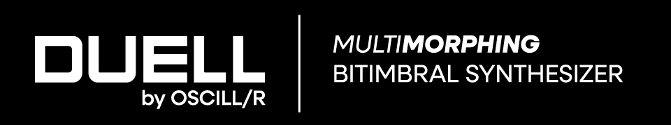

Web Emulator
Installer
Editor
FM-1 Cheat Sheet
SMK-37 Cheat Sheet

DEMO
PARTS
GLOBAL
Connect
Disconnect
Backup and restore
FM-1 Cheat Sheet
OCTAVE
0
DEMO
No unit is connected. Everything here is simulated and nothing is saved. Click through every tab.
Leave DEMO